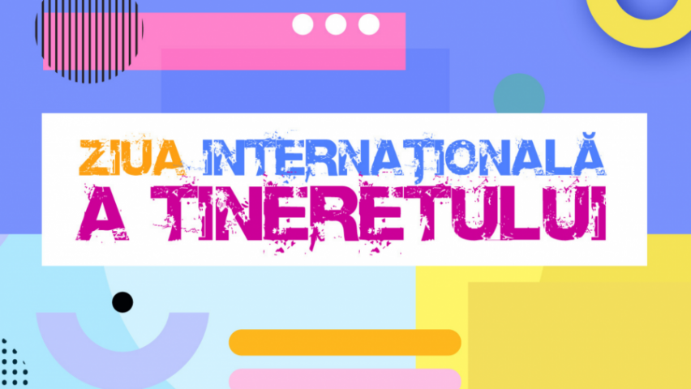
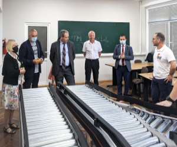

Evenimente
Astăzi :
Ziua internațională a tineretului
12.08.2021

Dragi tineri,
Astăzi, Republica Moldova, alături de întreaga comunitate internațională, celebrează Ziua
Internațională a Tineretului. Cu această ocazie, din numele Ministerului Educației și
Cercetării, adresez sincere felicitări tinerilor și tuturor celor ce depun efort pentru
dezvoltarea sectorului de tineret.
Voi, tinerii, sunteți resursa inepuizabilă a societății noastre. În voi găsim inspirație,
putere, pasiune și inițiativă, pentru voi urmăm calea schimbării și a progresului.
Am învățat, datorită vouă, să trăim cel mai profund sentiment de mândrie – atunci când
sunteți medaliați la olimpiadele internaționale la diverse discipline școlare, atunci când
drapelul țării noastre este arborat la cele mai importante competiții sportive din
străinătate, atunci când talentul vostru artistic este apreciat la nivel mondial.
Voi, tinerii, sunteți forța motrice a dezvoltării, voi sunteți purtătorii inovației și
ai energiei, în special, cei care se manifestă zi de zi prin perseverență, spirit civic,
solidaritate și atitudine proactivă. Vă doresc ca nimeni, niciodată, să nu reușească să
vă reducă entuziasmul și ambiția pentru schimbare.
Vreau să mă adresez și celor ce nu mai sunt tineri sau nu se mai simt tineri.
Nu le tăiați elanul, nu le spulberați visurile, nu le impuneți limite, nu-i lăsați să fie
copleșiți de dezamăgire și disperare! Ei sunt șansa unui viitor mai bun. Încurajați-i
și creați-le toate condițiile ca să se manifeste, să se dezvolte, să găsească și să
cultive în ei tot ce au mai bun.
Prin stimularea implicării tinerilor în toate etapele procesului decizional, prin
promovarea unor politici incluzive și asigurarea unui acces universal la serviciile și
programele educaționale de calitate vom impulsiona consolidarea societății noastre și
dezvoltarea economică a țării.
Dragi tineri, rămâneți în continuare activi și implicați, noi promitem să fim sprijinul
și călăuza voastră.
Anatolie Topală, ministrul Educației și Cercetării
Un grup de hackeri români minează criptomonede folosind dispozitivele victimelor din toată lumea
Cercetătorii Bitdefender au descoperit un grup de atacatori informatici români
care infectează de la distanţă calculatoare şi servere de pe tot globul, de unde
minează apoi ilegal criptomonede, potrivit unui comunicat al Bitdefender.
Procesul de minare a criptomonelor este unul de durată şi necesită sisteme informatice
scumpe cu putere de procesare mare, motiv pentru care atacatorii informatici evită
să folosească propriile dispozitive şi încearcă să preia controlul unor asemenea
sisteme de la distanţă şi să le folosească ca şi când ar fi ale lor.
După ce pun mâna pe sistemele victimelor, care rulează în acest caz sistemul de operare
Linux, hackerii instalează ilegal o aplicaţie şi minează pe termen nedefinit criptomoneda
Monero.
Astfel, dispozitivul infectat nu va mai funcţiona în parametrii optimi, se va deteriora
accelerat, serviciile găzduite pe serverele infectate vor funcţiona mai prost, iar consumul
de energie electrică plătit de victimă va creşte.
Cercetătorii în securitate informatică de la Bitdefender au depistat şi uneltele pe care
răufăcătorii le folosesc în mod fraudulos. Astfel, atacatorii au dezvoltat un program care
urmăreşte să ghicească parolele slabe folosite la protocolul prin care se face conectarea
de la distanţă la un server, iar odată intraţi în sistem instalează o aplicaţie modificată
ce foloseşte puterea de procesare pentru minarea de criptomonede.
Hackerii pot profita de vulnerabilitățile Bluetooth. Cum acționează
Infractorii cibernetici ar putea exploata mai multe vulnerabilităţi Bluetooth pentru a efectua atacuri de
impersonare (BIAS) şi se pot da drept un dispozitiv legitim în timpul procesului de conectare la un
dispozitiv.

Breşele de securitate, care afectează specificaţiile Bluetooth Core şi Mesh Profile, au fost descoperite
de către cercetătorii agenţiei naţionale de securitate cibernetică ANSSI din Franţa, iar experţii susţin
că patch-uri pentru remedierea vulnerabilităţilor ar trebui să fie lansate în următoarele săptămâni,
potrivit unei notificări a Grupului Bluetooth Special Interest Group (SIG), citată de blogul din România
al companiei de securitate informatică, Eset.
“Pentru a efectua cu succes atacul, infractorul ar trebui să se afle în raza wireless a două dispozitive
vulnerabile cu Bluetooth care se angajează în procedura de asociere. Odată ce procesul de autentificare
este finalizat, dispozitivul care răspunde va fi autentificat cu atacatorul în locul persoanei legitime. .
Cu toate acestea, atacatorul nu va putea utiliza această metodă pentru a se asocia cu dispozitivul iniţiator.
Centrul de coordonare CERT din SUA (CERT/CC) a lansat detalii suplimentare despre vulnerabilităţi, explicând
că un atacator ar putea exploata defectele pentru a finaliza protocolul de pairing şi a cripta comunicaţiile
folosind o cheie de legătură cunoscută, să se autentifice fără AuthValue sau chiar să-l forţeze brut”,
notează sursa citată.
Pe acelaşi subiect, Android Open Source Project, Cisco, Microchip Technology, Cradlepoint, Intel şi Red Hat
se află printre organizaţiile identificate de CERT/CC ca fiind afectate de cel puţin o parte dintre
vulnerabilităţi.
De altfel, primele trei entităţi au emis, deja, declaraţii care confirmă că lucrează la eliberarea de
patch-uri sau atenuări pentru defectele de securitate, în timp ce restul nu au vorbit încă despre această
problemă.
Conveier industrial la FCIM-UTM
Pe 23 iulie 2021, la Centrul de Cercetare și Instruire CIRCLE, Departamentul Ingineria Software și
Automatică, Universitatea Tehnică a Moldovei a fost lansat conveierul industrial, achiziționat în
cadrul Programului de Stat (2020-2023) „Modele, algoritmi și tehnologii de conducere, optimizare
și securizare a sistemelor ciber-fizice”, cu suportul companiei Inther Software Development.

La eveniment a participat expertul internațional pentru cooperare și dezvoltare a
companiilor mici și mijlocii, Elisabeth (Liesl) MUENCH, care a menționat importanța
colaborării și cooperării companiilor cu universitățile pentru o dezvoltare durabilă
și eficientă bazată pe cercetare, proiectare, implementare.
Rectorul UTM, prof. univ., dr. hab. Viorel BOSTAN, a subliniat că unul din pilonii
strategici de dezvoltare a UTM este integrarea cu industria. Formarea unor specialiști
competitivi pe piața muncii în domeniul ingineriei este imposibilă fără o colaborare
cu mediul de afaceri, cu integrarea tehnologiilor din industrie în procesul de educație.
Domeniul TIC presupune atât tehnologia informației, sisteme de comunicație, cât și
automatică, robotică, informatică industrială etc., iar dezvoltarea acestor domenii
contribuie la formarea unor specialiști calificați.
Decanul FCIM, conf. univ., dr. Dumitru CIORBĂ, a venit cu un cuvânt de mulțumire în
adresa companiei ISD pentru suportul oferit în achiziționarea și instalarea conveierului
în incinta laboratorului de Ingineria sistemelor automate DISA. Astfel, în noul an de
studii studenții de la programele „Automatică și informatică”, „Robotică și mecatronică”
vor avea posibilitatea să-și dezvolte competențe practice prin realizarea unor proiecte
reale pe un conveier industrial.
Șeful Departamentului ISA, conf. univ., dr. Ion FIODOROV, a mulțumit companiei ISD pentru
colaborarea de durată cu DISA și suportul oferit în formarea tinerelor generații de
ingineri automatiști prin dezvoltarea cunoștințelor teoretice și practice în cadrul
cursurilor de formare continuă, seminarelor și atelierelor de lucru, ce țin de
programarea PLC și automatizări industriale, dar și a diverselor concursuri studențești.
Directorul companiei ISD – Inther Software Development, Radu CORLĂTEANU, a subliniat
importanța dezvoltării colaborării cu UTM, contribuind la procesul educațional în
domeniul ingineriei prin asigurarea transferului de cunoștințe pentru formarea
specialiștilor înalt calificați. În decurs de câteva săptămâni, echipa ISD, împreună
cu studenții UTM, au instalat și ajustat cerințelor educaționale acest sistem.
Respectiva versiune de conveier este una mai mică, în comparație cu cea industrială,
însă are exact aceeași logică în spatele ei. Conveierul poate fi programat și configurat
în vederea simulării diferitelor situații practice din industrie.